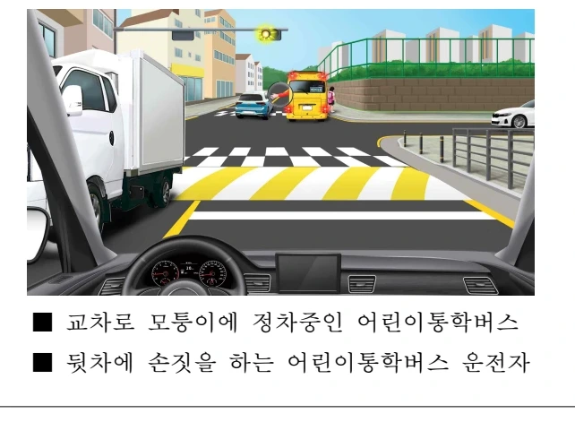

781. Hai cách lái xe nào là an toàn nhất khi muốn đi thẳng trong tình huống sau?

- ①Không tiến vào đường giao nhau cho đến khi xe buýt đưa đón trẻ xuất phát.
- ②Vì xe buýt đưa đón trẻ đang dừng nên có thể đi về phía bên trái.
- ③Đi về phía bên trái theo ký hiệu tay của người lái xe buýt đưa đón trẻ.
- ④Tiến vào đường giao nhau và chờ ở phía sau xe buýt đưa đón trẻ.
- ⑤Đề phòng có người đi bộ xuất hiện ở phía sau xe tải ở phía đối diện.
Xem đáp án
Đáp án
① Không tiến vào đường giao nhau cho đến khi xe buýt đưa đón trẻ xuất phát.
⑤ Đề phòng có người đi bộ xuất hiện ở phía sau xe tải ở phía đối diện.
Căn cứ
Điều 13, khoản 3 Luật Giao thông đường bộ. Người điều khiển ô tô, ngựa phải lái xe về phía bên phải tim (nếu có vạch tim thì lấy vạch tim; sau đây áp dụng tương tự) của đường (chỉ lòng đường trong trường hợp đường có vỉa hè và lòng đường riêng). Phụ lục 2 của Quy tắc thi hành luật giao thông đường bộ. Đèn vàng nhấp nháy có nghĩa là ‘các phương tiện và ngựa có thể đi tiếp trong khi chú ý đến các biển báo giao thông hoặc an toàn khác’, vì vậy bạn phải chú ý và đi tiếp ngay cả khi xe buýt chở học sinh phía trước đã khởi hành và có thể đi vào giao lộ. Điều 51 Luật Giao thông đường bộ. ① Khi xe buýt trường học trẻ em dừng trên đường và có các thiết bị như đèn nhấp nháy hoạt động để báo hiệu có trẻ em hoặc trẻ sơ sinh đang lên hoặc xuống, người điều khiển xe ô tô đang chạy trên làn đường mà xe buýt trường học trẻ em đang dừng và làn đường liền kề với làn đường đó phải dừng tạm thời trước khi đến được xe buýt trường học trẻ em, kiểm tra an toàn rồi lái xe chậm lại. ② Trường hợp quy định tại khoản 1, trên đường không có vạch giữa hoặc mỗi chiều có một làn đường, người điều khiển xe ô tô đi ngược chiều cũng phải dừng xe tạm thời, kiểm tra an toàn trước khi đến chỗ xe đưa đón học sinh rồi chạy chậm. ③ Người điều khiển phương tiện không được vượt xe buýt trường học dành cho trẻ em đang chạy trên đường có biển báo xe chở trẻ em hoặc trẻ sơ sinh.
Phần căn cứ là bản dịch máy để tham khảo.